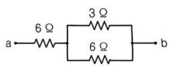
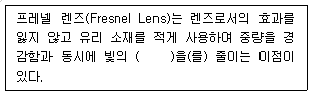
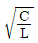
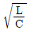
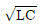

1과목: 항로표지일반
1. 해상부표식에서 원추형 두표의 원추저면부터 정점까지의 수직고는 저면직경의 몇 %가 되어야 하는가?
2. 로란-C와 같은 저주파에 많은 영향을 주고 있는 잡음방해의 개선책으로 틀린 것은?
3. 수면 위의 등고가 16m일 때 지리학적 광달거리는 대략 몇 마일인가? (단, 관측자의 수면 위 안고는 5m이다.)
4. IALA 해상부표식(B지역) 고립장애표지 두표의 색깔은?
5. 항로표지 장비, 용품 검사의 종류가 아닌 것은?
6. 주기가 10초이며 1군이 3섬광하는 군급섬백광은 동방위 표지를 표시하는데, 등질의 약기호를 옳게 나타낸 것은?
7. 눈, 비, 안개 등으로 인하여 시계가 나쁠 때 음향을 발하는 음파표지의 경우 시정이 몇 마일 이하일 경우 취명하여야 하는가?
8. 조석은 보통 하루에 두 번의 고조와 저조로서 일어나지만 같은 날일지라도 반드시 그 높이가 같은 것은 아니고 또한 월조간격도 같지 않은 것이 보통이다. 이것을 무엇이라고 하는가?
9. 항로표지로 오인될 우려가 있는 행위를 하지 않도록 법으로 제한한 내용은?
10. DGPS 보정정보 전달체계인 RTCM SC-104메시지 포맷번호 16은 무엇을 방송하는가?
11. 저질과 약기호의 연결이 옳지 않은 것은?
12. 항로표지법령상 항로표지의 종류 중 광파표지에 해당되는 것은?
13. 최근의 실측위치를 기준으로 하여 그 후에 조타한 진침로와 기관의 회전수로 구한 항정으로 선위를 결정하는 것은?
14. 항로표지 설계 시 파랑 관측 자료 또는 파랑 추산 자료가 없을 때 외해로부터 파도의 영향을 받는 지점의 파 주기는?
15. 항로표지법에서 사설항로표지의 소유자가 항로표지를 직접 관리하고자 하는 때에는 사설항로표지 설치 준공확인 통보를 받은 날부터 며칠 이내에 사설항로표지의 관리자 및 시설을 갖추었다는 사실을 증명할 수 있는 서류를 제출해야 하는가?
16. 선박이 항구에 입항할 때 외해로부터 우선적으로 이용되는 수로는?
17. IALA 해상부표식 부표 중 군섬황광 매 20초에 5섬의 등질을 권고하는 것은?
18. 좁은 수로의 항로를 표시하기 위하여 항로의 연장선 위에 앞뒤로 2개 이상의 육표로 되거나 방향표지로서 선박의 항행을 유도하는 것은?
19. 항로의 분기점에서 우선항로를 분기시키기 위한 항로표지는?
20. 부표설치기준상 해역 조건에서 항로상 좌측과 우측 한계선을 따라 설치해야 할 부표 간의 평균거리로 옳지 않은 것은?
2과목: 전기·전자기초
21. 6Ω의 저항 2개와 3Ω의 저항을 그림과 같이 연결하였을 때 a, b간의 합성저항(Ω)은?

22. 저항만 있는 교류회로에서 전압과 전류의 위상은?
23. 직류를 교류로 변환하는 장치는?
24. 일반적으로 예비전원이나 자동차의 시동용으로 많이 사용하는 축전지는?
25. 전위 6000V의 위치에서 전위 10000V의 위치로 전하 2×10-10C을 이동시킬 때 필요한 일(J)은?
26. 발전소로부터 전기 공급이 중단되거나 전압 변동 등의 장애가 발생해도 부하에 양질의 전원을 공급해 주는 장치는?
27. 분류기를 사용하여 전류를 측정할 때 전류계 내부 처항이 0.12Ω, 분류기 저항D 0.04Ω이면 분류기의 배율은 몇 배인가?
28. 직류 발전기에서 전기자의 주된 역할은?
29. 직류발전기의 원리에 해당되는 것은?
30. 부하 전류의 증가에 따라 출력 측 단자 전압이 급격히 강하하게 되는 수하 특성을 가지는 발전기는?
31. 전기자 권선이 계자권서과 병렬로만 접속되어 있는 직류발전기는?
32. 어떤 폐회로에 10V의 기전력이 주어지고, 그 회로의 저항 총합이 5Ω이었다. 이 회로에 흐르는 전류(A)는?
33. 대지전압 100V의 옥내 전로에서 분기회로의 절연저항은 몇 MΩ 이상이어야 하는가?
34. 전기 에너지(전력)를 수용 장소에 분배하는 것을 배전이라 하는데, 전압의 종류에 따라 저압, 고압, 특고압 등으로 구분한다. 고압(V)의 범위는?
35. 용량을 변화시킬 수 있는 콘덴서는?
36. 연축전지의 공칭전압(V/셀)은?
37. 평등 전장 40V/m에서 전장 방향으로 10cm 떨어진 두 점 사이의 전위차(V)는?
38. 다음 중 자기차폐와 가장 밀접한 것은?
39. 지시계기의 구성 요소가 아닌 것은?
40. 전류에 의한 자계의 방향을 결정하는 법칙은?
3과목: 광파·음파표지
41. 광파표지에서 이용하는 기하광학의 제법칙에 포함되지 않는 것은?
42. 진동체(말굽쇠 등) 2개의 고유 진동수가 같을 때 한 쪽을 울리면 다른 쪽도 울리는 현상은?
43. 등부표의 안정계산에서 ‘물 속에 잠긴 체적의 중심’을 무엇이라 하는가?
44. 진공 속에서 파장이 λ, 주파수 v인 빛이 굴절률이 n인 물질 속으로 진행하였다. 물질 속에서의 빛의 속도는? (단, 진공 속에서의 빛의 속도는 C이다.)
45. 도선의 설정 목적으로 거리가 먼 것은?
46. 음파표지에 속하는 것은?
47. 다음 ( )안에 들어갈 내용으로 적합한 것은?

48. 500Hz와 504Hz인 두 음에서 발생되는 맥놀이의 주기[s]는?
49. LANBY에 대한 설명으로 옳지 않은 것은?
50. 빛의 파동적 성질과 관련 없는 것은?
51. 해도에 표시된 등대의 높이(등고)는 무엇을 기준으로 한 것인가?
52. 해안에 돌출한 곶, 섬, 방파제 등 선박의 항해목표가 되는 위치에 건설하는 대표적인 항로표지는?
53. 300~500Hz 저주파로서 음향을 발사하는 무신호기는?
54. 다음 중 군섬광은?
55. 안전수역표지에 사용되는 등질의 섬광부호는?
56. 진동수가 60Hz인 파원에서 발생한 수면하의 파장이 4cm일 때, 수명파의 전파속력 (m/s)은?
57. 지리학적 광달거리의 요소가 아닌 것은?
58. 항로 연장선상의 육지에 설치된 고저차가 있는 등화를 갖춘 2기의 탑 모양의 구조물은?
59. 광파표지에 대한 설명으로 틀린 것은?
60. IALA에서 권고한 등질 중 “일정한 광도를 유지하고 암간이 없다.”라고 정위된 등질은?
4과목: 전파표지 및 시스템이용
61. Loran-C 체인의 통제 종류가 아닌 것은?
62. 레이더의 성능에서 동일 방향에 2개의 목표물이 접근되어 있어도 구별하여 확인할 수 있는 최소 거리차로서 이격 거리 판별 능력을 표시하는 지표는?
63. GPS의 측위오차 요인이 아닌 것은?
64. 어떤 시각에 F1층의 임계 주파수가 5MHz이고 송수신점 간의 거리가 500km일 때 F1층의 반사를 이용하여 전파되는 최고 사용 주파수(MUF)는 약 몇 MFz인가? (단, F1 층의 겉보기 높이는 250km이다.)
65. 진공 중에서 주파수 100kHZ의 파장(m)은?
66. 장·중파안테나(λ/4안테나)에서 손실의 대부분을 차지하는 것은?
67. GPS에서 C/A(Coarse Acquisition) 코드와 PN(Pseudo RAndom Noise)부호의 동기를 유지시키는 기구는?
68. 레이더에 발사된 전파가 20μsec 후에 목표물에 반사되어 돌아왔다. 목표물까지의 거리(km)는?
69. 레이콘에 사용되는 S-band 주파수로 적합한 것은?
70. Loran-C 체인의 주국(M)으로부터 전기적 거리가 2000μs, 종국(S)에서 전기적 거리가 1500μs 떨어진 수신지점의 주국과 종국신호의 도달 시간차(TD)는?
71. Loran-C에서 종국신호 선두 두 개의 펄스가 ON/OFF를 반복하여 해당 기선의 이용이 불가능함을 나타내는 것은?
72. 조류가 빠른 항만 입구나 수로에서 조류의 속력, 방향 및 그 경향 등에 관한 정보를 수집하여 선박에게 알려주는 시스템은?
73. 전리층 내에서 주파수가 다른 2개의 전파 간 간섭 현상으로 복사전력이 강한 쪽 전파에 의하여 다른 쪽 전파가 변조되는 현상은?
74. GPS 위성에서 발사된 신호가 해면이나 구조물 등에 반사되어 수신 파형을 왜곡시키고 의사거리 측정의 정도를 낮추는 것은?
75. 다음 중 지표파에서 가장 손실이 적게 원거리까지 도달할 수 있는 것은?
76. 특수신호 시스템 중 초음파식 도플러 다층유속계로도 불리며 수괴의 수직면 Profile을 얻을 수 있는 방법은?
77. 선박에 설치되어 자신의 위치, 속도, 항로 및 기타 정보를 자동 송·수신하는 장비는?
78. 송신 안테나의 분포정수회로에서 무손실 선로의 특정 임피던스? (단, L : 인덕턴스, C : 정전용량)



79. LOARAN-C 시스템에서 주국의 기능으로 거리가 먼 것은?
80. eLoran은 송신국 간 시각동기에 대한 설명이다. 각 송신국의 동기는 타 송신국과 얼마 이내로 셋트될 수 있어야 하는가?